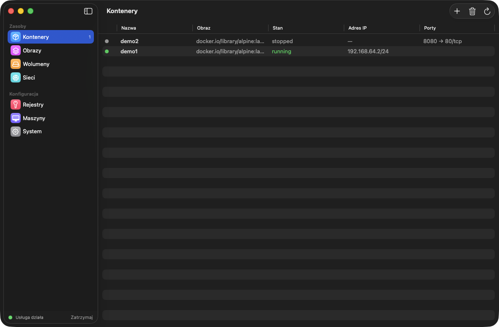
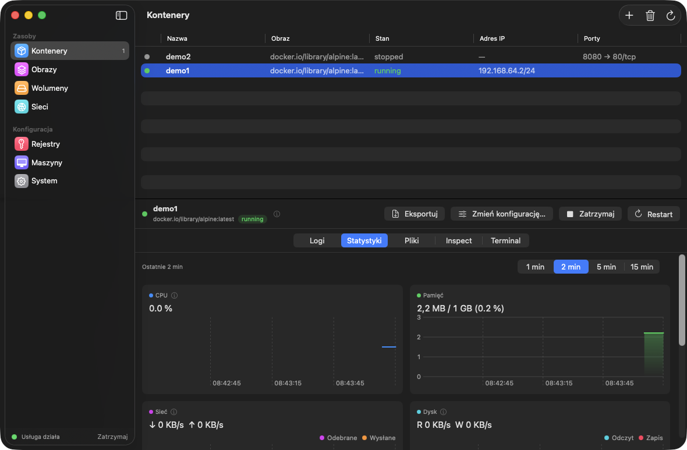
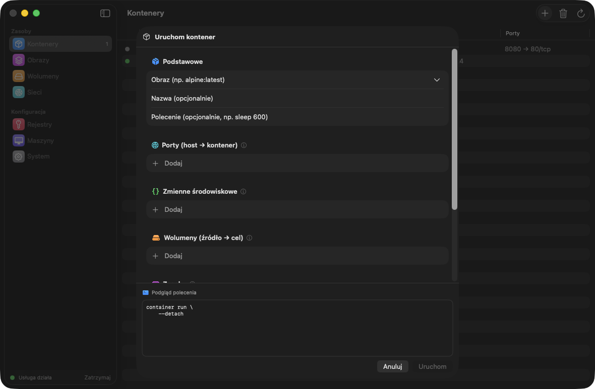
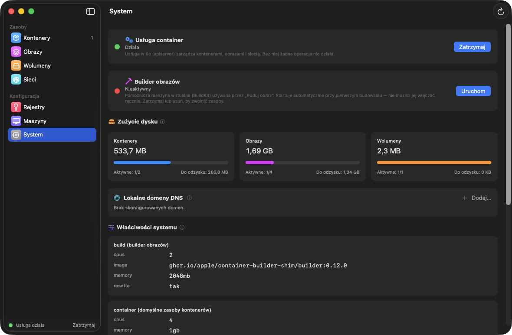

Free & open source · macOS 26 · Apple Silicon
Container Desktop
A native macOS app for Apple's container CLI.
Think Docker Desktop — but built with SwiftUI, and reimplementing nothing:
every action runs the official CLI, so the app always shows exactly what the CLI sees.
Not notarized yet — on first launch use System Settings → Privacy & Security → Open Anyway,
or build from source with xcodegen generate && xcodebuild.

Everything the CLI can do, one window away
Containers
Run, stop, restart, recreate with edited configuration. Logs, file browser, inspect and an embedded terminal (exec -it) per container.
Live statistics
CPU, memory, network and disk charts refreshed every second, with time windows and hover tooltips. Native Swift Charts.
Images
Pull and build from a Dockerfile with progress streamed live into the dialog. Run a container straight from any image.
Volumes & networks
Create, inspect, prune. Mount a named volume or any local folder in the run dialog.
Registries & machines
Private registry logins (password via stdin) and full container-machine lifecycle.
System & menu bar
Service control with verified stop, disk usage, service logs, local DNS — plus a menu bar extra with one-click actions. English & Polish.
A quick look
Live charts
Per-second CPU, memory, network and disk throughput with a selectable time window — hover any chart to inspect a sample.

Run dialog
Ports, env, volumes, resources, amd64 + Rosetta — with a copy-pasteable preview of the exact CLI command it will run.

System at a glance
Service and builder status explained in plain words, disk usage with reclaimable space, readable system properties and service logs.
